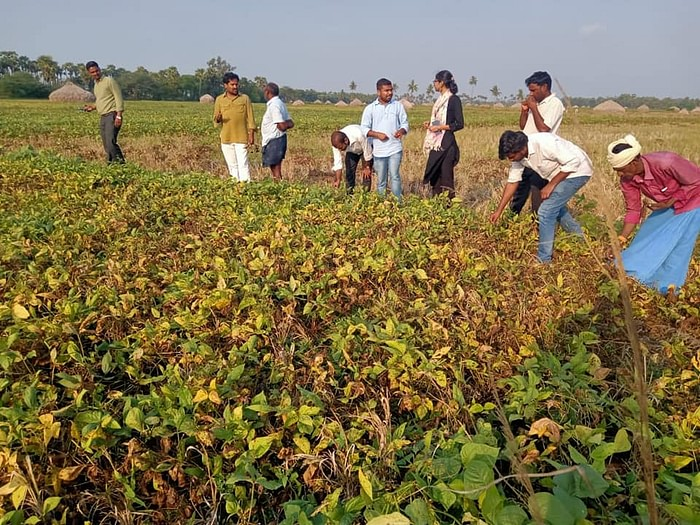
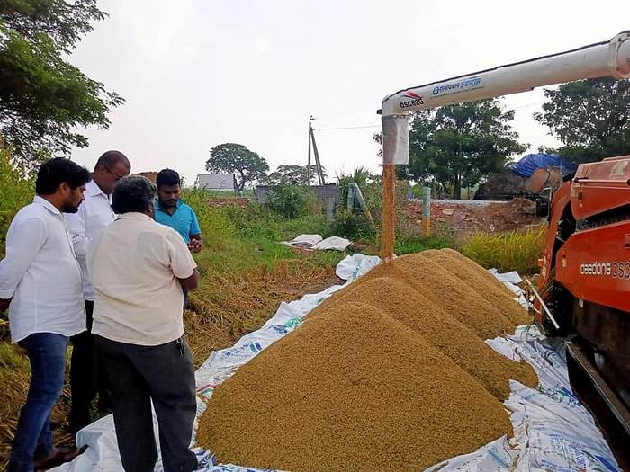
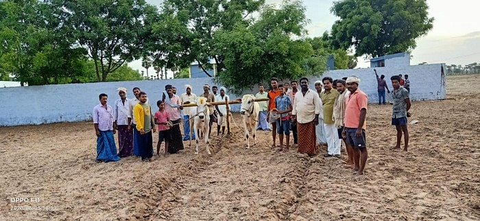

A lot of people are coming back to their hometowns as a result of the COVID-19 pandemic, in a reverse migration of sorts. For several people, this has been a time to reconnect with their roots and also become farmers. For, Lakshmi Narasimha Ikkurthi, 36, an engineer hailing from Andhra Pradesh, the decision to return to his hometown happened way before the pandemic.
In fact, his decision to quit a job opportunity in the US and return to Guntur, Andhra Pradesh led to the creation of the ‘Yazali Farmers Producer Company’ which has generated jobs for more than 400 farmers in his village and has turned the place into an agricultural paradise.
How It All Began
For Lakshmi Narasimha Ikkurthi, everything started with a series of accidents that happened in his village that date back to 2010. Seven teenagers who were under the influence had died in separate accidents over the year.
“On hearing about these events from my mother, I realised how the lack of education and unemployment had led to these events and immediately wanted to do something about it,” says Narasimha.
At that point in time, Narasimha was working for CSC in Hyderabad and was getting ready to leave to the United States as part of his work. But on hearing this, Narasimha decided to drop the plan altogether.
“I returned to Hyderabad and connected with people who had migrated from my village and created a group under the name ‘Yazali-Naa Janmabhumi’ which consisted of around 400 families. With the help of the group, I started collecting funds and raised about to Rs 10 Lakh which was used to renovate the school with labs, boundary walls, a virtual library and a 500 seater cafeteria. We were also able to build an old age home with the money that was raised,” he explains.
Painting The Town Green With Farmers
As a result of Narasimha’s initiatives to develop educational facilities in his village, several youngsters found a new future. His next step was to move forward and create a platform that would provide employment opportunities to the villagers through agriculture.
“I wanted the youngsters and the farmers of my village to get a chance to explore the roots of the village and wanted to bring advanced farming techniques through training programmes and wanted them to explore the opportunities in our own village before venturing out to other places,” Narasimha explains.
“My idea was to create an organisation that put a name to the food we ate, a brand name for the rice and vegetables that our farmers produced,” he adds.
As part of this project, Lakshmi Narasimha initiated a partnership with Acharya NG Ranga Agricultural University in Guntur where 40 PhD students and professors would visit the village to educate farmers about new and innovative farming practices.
“Although the training programmes were informative, the farmers did not show much of an interest in them and wanted to continue their own practices. That’s when I came to the realisation that I myself had to have the first-hand experience in farming in order to create such a platform,” he explains.
Using a few acres of barren land near Shamirpet that was acquired by the Yazali Na Janmabhoomi group, Narasimha cultivated around 2000 saplings of grape, watermelon and vegetables in a span of just six months with the help of the village governing body, all while managing his job in Hyderabad.
“Soon after this, I left my job completely and dedicated myself completely towards the project. I conducted surveys across the village to get a better understanding about what the farmers were growing, how they sold their produce, whether their produce was organic and even visited the Sahyadri Farms in Maharashtra to understand how farmer-producer organisations functioned,” Narasimha explains.
Eventually, in October 2018, Narasimha launched the Yazali Farmers Producer Company in collaboration with 400 farmers in his village. The company provides the farmers with the raw materials needed for the agriculture, the procurement and processing of the produce along with marketing and branding all while ensuring quality produce reached consumers.
“We now produce grow paddy, maize, pulses, black and green gram, green chilli and some vegetables. With the pandemic in force, the company has been able to help out several farmers sell their produce and find suitable markets and not to forget, generate a good amount of income for them,” he says.
As a result of his efforts in areas of rural development and agriculture, he received the Young Achiever Award from Quality Council of India (QCI) in 2017, The Rural Achiever Award 2018 from Prime Minister Modi and The Yuva-Kalam Excellency Award in 2018.
“The company is now looking at expanding agriculture to almost 5,000 acres of land which could benefit almost 4,000 farmer families. In the future, I hope to see Yazali as a household brand name that could, in turn, help the consumers appreciate the farmers that have worked for the food they eat,” he concludes.